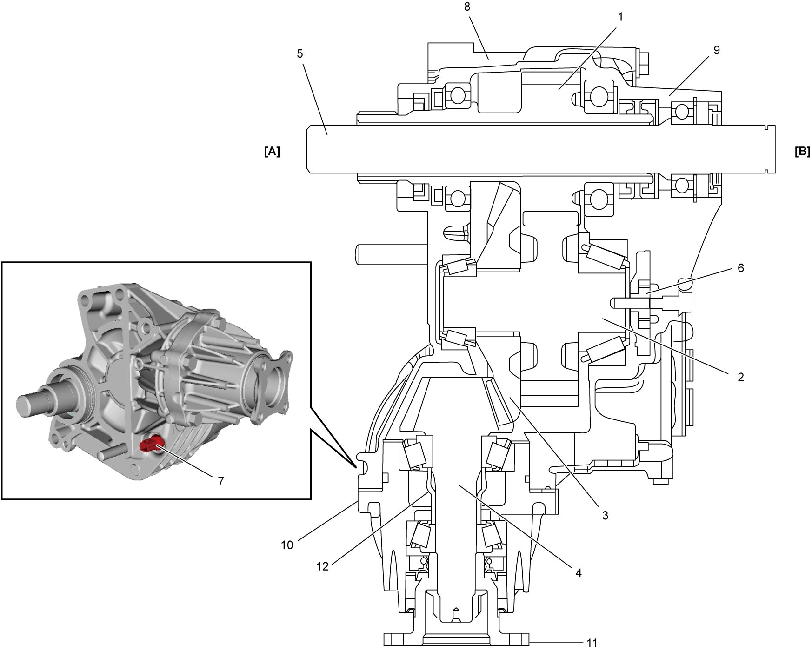

3C
| Transfer Description |
•A driving force from the differential case is transmitted through the coupled spline to the reduction drive gear (1), reduction driven gear (2), and by changing the direction of the driving axis by 90 degrees via the bevel gear (3), the power is outputted to the bevel pinion (4), after which it is then transmitted to the propeller shaft.
On the other hand, the driving force from the front differential is directly transmitted to the transfer intermediate shaft (5) and the right side drive shaft.
•The oil pump (6) is employed to internally lubricate the transfer.
•The transfer oil temperature sensor (7) is employed to protect the transfer. The sensor is mounted on the transfer case and detects transfer oil temperature.
The 4WD control module uses the sensor signal to control the rear drive coupling unit.
If the temperature exceeds the upper limit, the 4WD control module limits the torque transmitted to the rear differential by controlling the rear drive coupling unit.
•The shortened bevel pinion realizes a shorter transfer length and ensures better serviceability of the transfer when dismounting and remounting.
On the other hand, the driving force from the front differential is directly transmitted to the transfer intermediate shaft (5) and the right side drive shaft.
•The oil pump (6) is employed to internally lubricate the transfer.
•The transfer oil temperature sensor (7) is employed to protect the transfer. The sensor is mounted on the transfer case and detects transfer oil temperature.
The 4WD control module uses the sensor signal to control the rear drive coupling unit.
If the temperature exceeds the upper limit, the 4WD control module limits the torque transmitted to the rear differential by controlling the rear drive coupling unit.
•The shortened bevel pinion realizes a shorter transfer length and ensures better serviceability of the transfer when dismounting and remounting.

 "Expand image")
| [A]: | Transaxle side | 9. | Transfer right case | 12. | Spacer |
| [B]: | Drive shaft side | 10. | Transfer output retainer | ||
| 8. | Transfer left case | 11. | Transfer output flange |